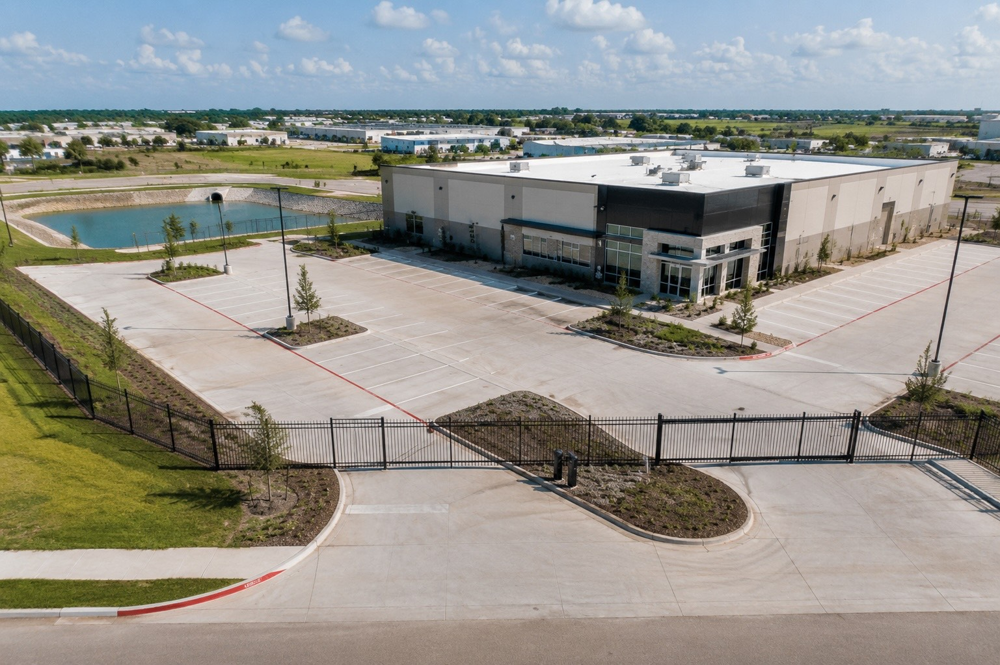

Blog · Guide · Published June 2026
What Commercial Site Development Actually Includes — A Texas GC's Guide

"Commercial site development" is one of those phrases that means everything and nothing at the same time. If you're an owner or developer scoping a new pad site in Greater Houston, this is what's actually inside the contract — section by section, the way an honest site-development GC bids it.
The 8 sections in a real site-development bid
A proper commercial site-development bid in Texas reads section-by-section, not as a lump sum. These are the sections that show up on virtually every job — some may be small, some may be huge, but they should all be called out.
1. Site Work
The umbrella section that covers clearing, grubbing, strip topsoil, rough grading, cut and fill balancing, pad construction with select fill, density testing, and finish grading. This is usually the biggest single section on a new commercial pad. Bidders should list cut/fill quantities in cubic yards, not just lump sum.
2. Civil Utilities
Below-grade work inside the property line. Water service, fire line, sanitary sewer main and laterals, storm drainage mains and inlets, conduit packages for electrical and telecom. Includes tap coordination, pressure testing, and as-builts.
3. Drainage & Detention
The site-specific stormwater system: detention pond cut, outfall structure, swales, underground detention vault if used, water-quality features. This often shares scope with Section 2 (Civil) but on bigger sites it's worth its own line so the cost and inspections are tracked separately.
4. Paving Base
Subgrade stabilization (lime, cement, or geogrid per the geotech), flex base, and the prep that goes under the paving contractor's concrete or asphalt. The paving itself is sometimes inside this scope and sometimes broken out separately; bidders should be explicit either way.
5. Fencing & Gates
On most commercial pad sites: game fence around the perimeter, chain-link or ornamental at the entrance, cantilever or slide gates with keypad and cloud-based access, plus any required fall protection or barrier separation.
6. Site Lighting
Hardwired site lighting on poles, often with solar backup batteries that hold the lights up overnight if grid power fails. Conduit and bases are usually trenched with the rest of the underground package in Section 2.
7. Security Cameras & Access Control
HD hardwired cameras with solar backup, gate keypads with cloud software for granting access, and the conduit/wiring to make it all work. Same trench plan as the lighting so trenches are open once.
8. Electrical Service
The primary and secondary electrical service from the utility transformer to the building, plus the panel and the site distribution to lights, cameras, gates, and any other site loads. Coordinated with CenterPoint or the local co-op.
What's usually NOT inside a site-development scope
Owners sometimes assume site development covers the building itself. It doesn't. Site-development is everything outside the building envelope plus the underground tie-ins. The vertical contractor handles:
- The slab and foundation
- Above-grade framing, walls, roof
- Interior MEP rough-in and finish
- Interior finishes
On smaller builds (~10,000 SF and under), the site-development GC and the vertical GC are sometimes the same company. On bigger builds they're usually separate contracts coordinated through the owner or a CM-at-risk.
How a real bid breaks down
An honest site-development bid for a typical 1-acre commercial pad in Magnolia or Conroe might break out something like this (illustrative, not a quote):
- Site Work — clearing, grading, pad construction, density testing
- Fencing & Gates — perimeter fence + cantilever entry gate with keypad
- Site Lighting — hardwired site lights with solar backup
- Security Cameras — HD hardwired camera package with solar backup
- Civil & Electrical — water, sewer, storm, conduit, full-site electrical
- Drainage & SWPPP — detention, erosion control, inspections
Each section has its own subtotal. Each line item under the section has its own qty, unit, and unit cost. Contingency and overhead are called out separately (or rolled into line prices, but disclosed). The total at the bottom should be defensible to the dollar.
Questions to ask a site-development contractor
- Does your bid balance cut and fill on site, or am I paying for import/export?
- Who pulls the SWPPP and maintains the erosion controls? You or me?
- Are utility taps coordinated by you, or am I responsible for that schedule?
- How are change orders documented — before work begins, or on the final invoice?
- What's your warranty on the pad — will you come back if it settles?
- Can I see your line-item template before you bid?
The right answers shake out the contractors who scope cleanly from the ones who bid lump sum and surprise you on every change.
Ready to scope your project?
Veritas Builders handles commercial site work across Magnolia, Conroe, Montgomery County, and Greater Houston. Line-item bids, coordinated trades, and one accountable team from raw ground to build-ready.